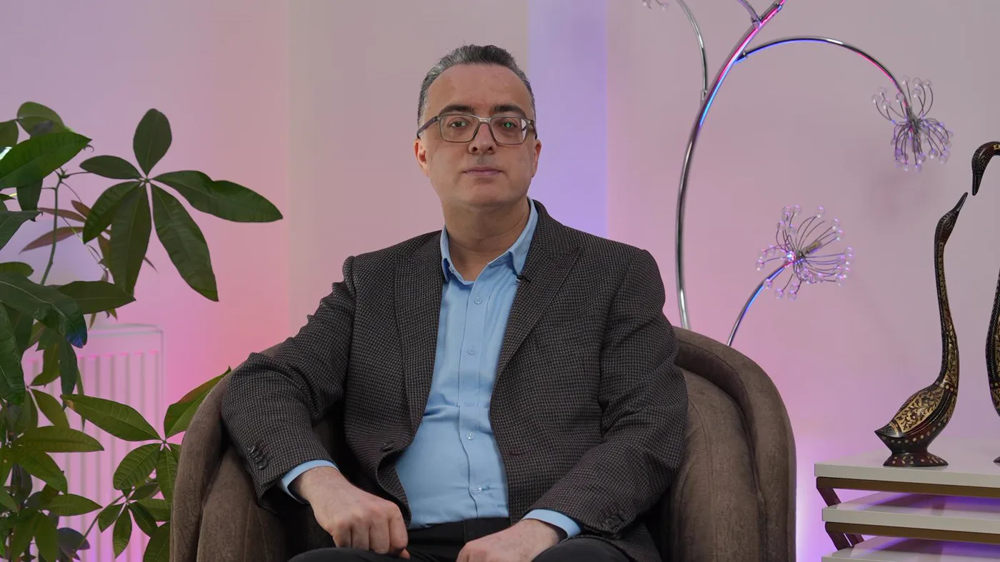

Değerlendirme ve Takip · Muayene
Uygulamadan önce kişiye bakılır
Hekim muayenesi, herhangi bir uygulama konuşulmadan önce yapılan tıbbi değerlendirmedir. Yakınma olan bölge incelenir; süregelen hastalıklar, kullanılan ilaçlar ve önceki uygulamalar sorulur, beklentiniz dinlenir. Sonunda neyin uygun, neyin gereksiz olduğu yazılı bir plana dökülür. Görüşmenin amacı işlem önermek değil, gerekçeli bir karar vermektir.

Gerekçe
Uygulamadan önce muayene neden gerekli?
Bu muayenehanede her plan aynı kapıdan başlar. Aklınızda bir yakınma da olsa, belirli bir uygulamanın adı da olsa ilk adım değişmez. Yapılacak işlem görüşme bitmeden seçilmez; gereksiz olanlar da çoğu kez tam bu sırada ayıklanır.
Birbirine benzeyen iki yakınmanın kaynağı farklı olabilir; yanlış kaynağa yönelen bir uygulama ne kadar özenle yapılsa da amacına ulaşmaz. Göz altındaki koyuluk bir gölge, belirginleşmiş bir damar ağı ya da pigment birikimi olabilir ve her birinin yolu ayrıdır. Bu ayrımı yapabilen tek adım muayenedir.
Aile hekimliği eğitimi, bir yakınmayı tek bir bölgeden değil kişinin genel sağlık tablosundan okumayı öğretir. Bu dahili bakış açısı nedeniyle görüşmede tiroid hastalığı, kansızlık, şeker hastalığı ve tansiyon gibi süregelen durumlar ile düzenli kullanılan ilaçlar ayrıca ele alınır; kâğıt üzerinde uygun görünen bir işlem bu bilgilerle riskli hâle gelebilir. Bir diğer konu beklentidir: bir işlemin değiştirebileceği ile kişinin umduğu her zaman aynı değildir ve bu farkın uygulamadan önce konuşulması gerekir.
Muayene bir ürün ya da seans tanıtımı değildir. İnceleme yapılmadan verilen bir uygulama kararı, gerçekte bir tahminden ibarettir. Görüşmenin olası sonuçlarından biri hiçbir işlem yapılmamasıdır; bu bir eksiklik değil, gerekçesi olan tıbbi bir karardır. Yapmadığımız işlemleri ve nedenlerini neden bazı işlemleri yapmıyoruz sayfasında tek tek açıkladık.
Süreç
Muayenede adım adım ne yapılır?
Görüşme dört bölümden oluşur. Süresi, konuşulacak yakınma sayısına ve öykünün ayrıntısına göre değişir; bölümlerin sırası değişebilir ama hiçbiri atlanmaz.
Dört bölümün dördü de
Her görüşmede bölümlerin tamamı yapılır; yalnızca sıraları kişiye göre değişebilir.
Çubuklar göreli simgedir; asıl süre görüşmede belirlenir.
- Yakınmanın dinlenmesi. Neyin, ne zamandan beri rahatsız ettiği ve daha önce neler denendiği sorulur; yönlendirici soru sorulmaz.
- İnceleme. Bölge eşit ışık altında, gerekiyorsa büyütmeyle incelenir; cilt tipi ve yüzün yapısal özellikleri kaydedilir.
- Genel sağlık ve ilaç sorgusu. Süregelen hastalıklar, ilaç ve takviyeler, önceki uygulamalar ve reaksiyonlar, gebelik ve emzirme durumu ele alınır.
- Plan, bilgilendirme ve onam. Uygun olanla olmayan ayrılır, plan yazıya dökülür; aynı gün işlem yapılacaksa önce onam alınır.
Muayene ile uygulamanın aynı güne denk gelmesi şart değildir. Değerlendirmeden sonra düşünmek istemeniz son derece anlaşılır bir tercihtir. Bazı durumlarda ise beklemek gerekir: bir tetkikin sonucu görülecekse, kullanılan bir ilaca ara verilmesi gerekiyorsa ya da ciltte aktif bir sorun varsa uygulama daha sonraki bir tarihe planlanır.
"Önce kişi, sonra bölge."
İnceleme
Yüz analizinde nelere bakılır?
Yüz analizi, yüzü ideal ölçülere uydurma çalışması değildir. Amaç, zamanla değişen özellikleri size ait olan ve korunması gereken özelliklerden ayırmaktır.
Hareketsiz ve hareketli yüz
Yüz önce dinlenirken, ardından mimik yaparken incelenir. Yalnızca konuşurken ya da gülerken beliren çizgi ile yüz dinlenirken de görülen çizgi aynı şekilde ele alınmaz.
Asimetrinin kaydı
Hiçbir yüzün iki yarısı birebir aynı değildir. Var olan farklar uygulamadan önce not edilir; böylece sonradan fark edildiklerinde işlemin sonucu sanılmaz.
Cilt kalitesi ve koruyucu tabaka
Cildin nemine, gözeneklerin görünümüne, kolay kızarıp kızarmadığına ve daha önce tahriş olup olmadığına bakılır. Koruyucu tabakası zayıflamış bir ciltte ilk adım işlem değil, bakım düzenidir.
Bölgelerin birbirine etkisi
Yüz parça parça değil, bir bütün olarak değerlendirilir. Tek bir noktaya yoğunlaşmak dengeyi bozabileceğinden, yapılacak bir değişikliğin komşu bölgelere yansıması önceden konuşulur.
Geçmiş uygulamalar
Daha önce yaptırılan işlemlerin türü, tarihi ve yapıldığı bölge sorulur. Bu bilgiler hem planın içeriğini hem de güvenliği doğrudan etkiler.
Gerekmeyenin de yazılması
Analiz yalnızca yapılabilecekleri değil, gerek olmayanları da listeler. Bu liste en az öneriler kadar değerlidir ve planın ayrılmaz bir parçasıdır.
Yakınmanıza göre değerlendirmenin nasıl ilerlediğini cilt sorunları bölümünde, bölgelere göre planlamayı bölgeler bölümünde, işlemlerin tam listesini ise uygulamalar sayfasında bulabilirsiniz.
Güvenlik
Hangi ilaçlar ve sağlık başlıkları sorulur?
Görüşmenin en uzun bölümü burasıdır ve kısaltılmaz. Aşağıdaki her başlık, bir planı değiştirebilecek ya da tümüyle erteletebilecek bilgiler içerir.
İlaç ve takviye sorgusu
- Kan sulandırıcılar ve trombosit işlevini etkileyen ilaçlar
- Bağışıklığı baskılayan tedaviler ve kortizon kullanımı
- Düzenli alınan ağrı kesiciler ve iltihap giderici ilaçlar
- Tiroid, şeker ve tansiyon için kullanılan ilaçlar
- Cilde sürülen reçeteli ürünler, bitkisel ürünler, vitamin ve takviyeler
Genel sağlık öyküsü
- Süregelen hastalıklar, geçirilmiş ameliyatlar ve hastane yatışları
- Kansızlık, kanama eğilimi ve pıhtılaşma sorunları
- Uçuk öyküsü ve sık tekrarlayan cilt enfeksiyonları
- Gebelik, emzirme ve yakın dönemde gebelik planı
- Önceki estetik uygulamalar ve sonrasında yaşanan istenmeyen durumlar
Tiroid, şeker, tansiyon ya da kansızlık gibi düzenli izlenen bir durumunuz varsa son kontrolünüze ait belgeleri, son aylarda yaptırdığınız kan tetkikleri varsa çıktılarını yanınızda getirin. Bu bilgiler hem uygulamanın zamanlamasını hem de seçilecek yöntemi etkileyebilir; eksik bir bilgi varsa gerekli tetkik bu görüşmede istenir.
İlaçlarınızın kutularını ya da adlarını yazdığınız bir listeyi getirmeniz görüşmeyi kolaylaştırır. Hazırlanması gerekenleri hazırlık listesi sayfasında maddeler hâlinde topladık.
Görüşme
Beklenti görüşmesinde neler konuşulur?
Bu bölümde asıl soru şudur: aynaya baktığınızda neyin değişmesini istiyorsunuz? Cevap çoğu zaman bir işlemin adı olmaz. “Yüzüm hep asık duruyor” ya da “makyajla bile kapatamıyorum” gibi ifadeler, hangi bölgeye bakılacağı konusunda bir uygulama adından daha çok şey anlatır.
Sonra bu isteğin tıbbi olarak karşılanıp karşılanamayacağına bakılır. Karşılanabiliyorsa ne ölçüde ve ne kadar sürede karşılanabileceği anlatılır; karşılanamıyorsa bu açıkça söylenir ve ulaşılabilecek gerçekçi hedef tarif edilir.
Bu görüşmede bir sonuç için söz verilmez, bir işlemin herkese uyduğu söylenmez ve bugün karar vermeniz için baskı yapılmaz. Beklenti ile uygulamanın sınırı örtüşmüyorsa işlem planlanmaz; böyle bir sonuç sık görülür ve tıbben yerindedir. Çalışma biçimimizin tamamını yaklaşımımız sayfasında anlattık.
Onam
Aydınlatılmış onam formu neyi kayda geçirir?
Aydınlatılmış onam, yapılacak işlemi, olası sonuçlarını ve seçeneklerini anladığınızı kayda geçiren yazılı belgedir. Girişimsel hiçbir uygulama bu belge imzalanmadan yapılmaz. Amacı sorumluluğu size devretmek değil, bilgilendirmenin yapıldığını belgelemektir.
Onam belgesinde neler yazar?
- İşlemin tıbbi adı ve uygulanacağı bölge
- Amaçlanan ve amaçlanmayan değişiklikler
- Sık, seyrek ve nadir görülen istenmeyen durumlar
- İşlemden sonra dikkat etmeniz gerekenler ve kaçınmanız gerekenler
- Diğer seçenekler ve hiç işlem yapmama seçeneği
- Kontrol tarihi ve bir sorun olursa ulaşacağınız iletişim yolu
Bu süreçte haklarınız
- İmzalamadan önce metni kendi hızınızda okumak ve soru sormak
- Anlaşılmayan bir maddenin yeniden açıklanmasını istemek
- Karar için süre istemek ve randevuyu başka güne almak
- Onam verdikten sonra da işlemden vazgeçebilmek
- Dosyanızdaki kayıtları görmek
- Kişisel verilerinizin nasıl işlendiğini öğrenmek
Haklarınızın tamamı hasta hakları, verilerinizin işlenme biçimi KVKK aydınlatma metni sayfasında yer alır. Uygulamadan sonraki dönemde nelerin izlendiğini uygulama sonrası takip sayfasında bulabilirsiniz.
Sorgulayın
Sorunuzu seçin, cevap ekrana düşsün
Bu sayfa genel bilgi vermek amacıyla hazırlanmıştır. Bir uygulamanın size uygun olup olmadığına ancak muayene ve sağlık öykünüz değerlendirildikten sonra karar verilebilir. Girişimsel işlemlerde sonuç önceden taahhüt edilemez; etkinin ne ölçüde görüleceği ve ne kadar süreceği kişiden kişiye değişir. Amacı bir işlemi tanıtmak ya da sizi bir işleme yönlendirmek değildir.
Muayeneyi kim yapar? Değerlendirmeyi muayenehanenin sahibi ve sorumlu hekimi Uzm. Dr. Rahmi Cebeci yapar. Uzmanlık eğitimi sırasında endokrinoloji ve hematoloji dahil çeşitli dallarda rotasyon yapmış, Sağlık Bakanlığı onaylı Medikal Estetik Uygulama Sertifikasını Ulus Liv Hospital’da almıştır. Eğitim geçmişi hekim sayfasında, muayenehanenin fiziki koşulları klinik sayfasında yer alır. Yakınmanız medikal estetiğin alanı dışındaysa uygulama yapılmaz; hangi dala başvurmanız gerektiği gerekçesiyle birlikte anlatılır.
Devamı
İlgili başlıklar
Cilt sorunları
Yakınmanızdan yola çıkın: hangi bulgunun hangi başlıkta ele alındığını görün.
İnceleTüm uygulamalar
Muayeneden sonra planlanabilecek işlemlerin, dört grup altında tam listesi.
İnceleHazırlık listesi
Görüşmeye gelmeden önce hazırlamanız ve yanınıza almanız gerekenler.
İnceleYaklaşımımız
Çalışma düzenimizin dört aşaması ve neden az ama gerekçeli işlem önerdiğimiz.
İnceleHekim
Uzm. Dr. Rahmi Cebeci — eğitimi, görev yaptığı kurumlar ve uygulama alanı.
İnceleSıkça sorulan sorular
Randevu, görüşme ve uygulama süreciyle ilgili sık gelen sorular.
İnceleSonraki adım
Her plan bir görüşmeyle başlar
Sorunuzu getirin; hangi uygulamanın gerektiğine, belki de hiçbirinin gerekmediğine birlikte karar verelim. Cevizlik Mah. Ebuziya Cad. No:47/1, Bakırköy / İstanbul.
Bu içerik Uzm. Dr. Rahmi Cebeci (Aile Hekimliği Uzmanı · Medikal Estetik Sertifikalı) tarafından hazırlanmış ve tıbbi doğruluk yönünden denetlenmiştir.
Bu sayfadaki bilgiler genel bilgilendirme amaçlıdır; tanı veya tedavi önerisi niteliği taşımaz ve hekim muayenesinin yerine geçmez. Sonuçlar kişiden kişiye değişiklik gösterebilir.